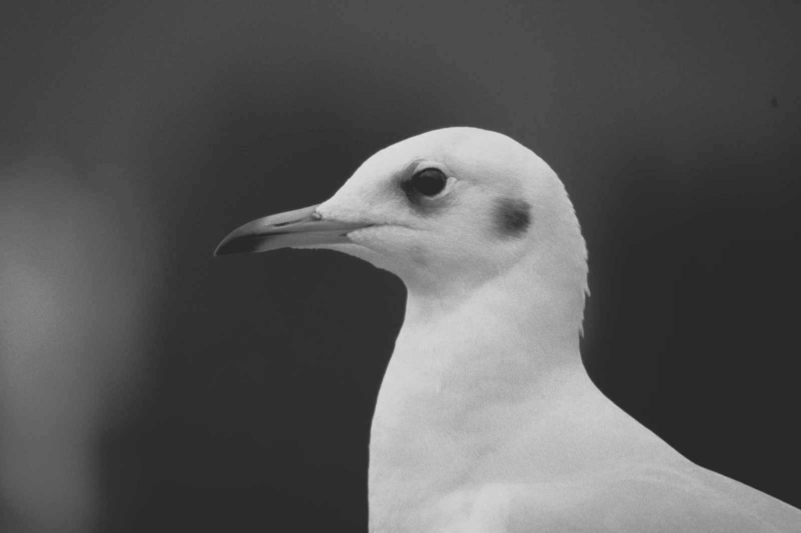
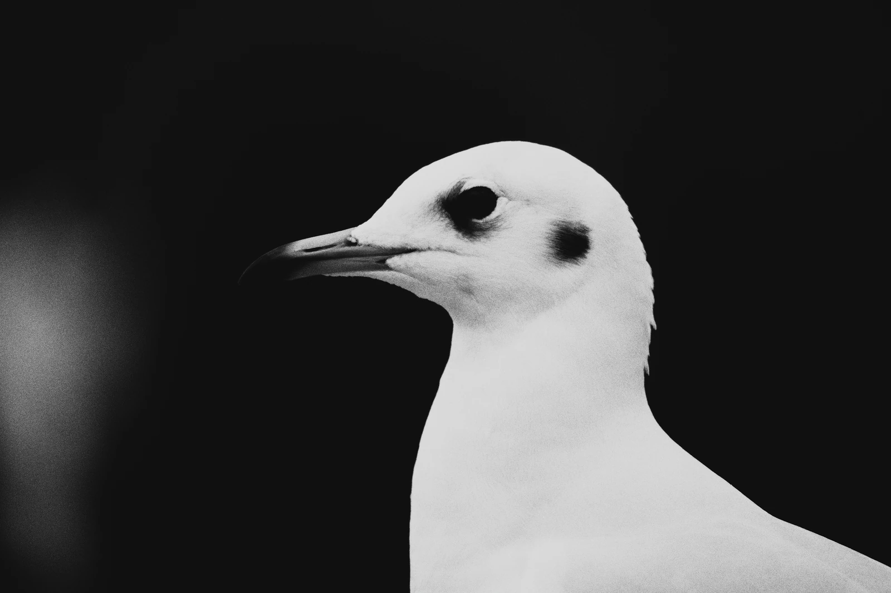

Silverphase
Darkroom notes
Trace a photograph through the darkroom, then look closely at the part of the process you want to change.

135 film edge · Portra 400
The path to a print
Prep
Set the input exposure, tones and detail. Supported RAW files can start from the brightness of the camera preview.
Film exposure
Choose a stock and format, then set film metering and exposure.
Development
Develop the latent image into a negative for printing or scanning.
Printing
Choose paper for the negative. Set the print exposure and filtration.
Scan and export
Export the finished image, or use a Cineon DI intermediate for grading.
Questions at the enlarger
What changes when only the paper changes?
Both lotus prints come from one cached Portra 400 negative. Compare the pink-to-magenta transition in the petals and the green in the background.


Film exposure is +0.67 EV from metered. Both print settings are 0.88 with each paper’s neutral calibration, grain and halation enabled.
Open the original and matched detail crops
Which grade suits a black-and-white print?
Read the tones from the feathers beneath the bird’s eye into the foliage. Grade 00 gives a softer transition. Grade 4 separates light and dark more sharply.




One Acros II negative on Ilford Multigrade IV RC. Changing grade applies the built-in filtration and mid-gray exposure compensation.
Where do halation and grain show up?
In this 800T night print, follow the orange-red glow along the sign, then the grain on the lit pavement. These are two original-pixel crops from the same frame.


CineStill 800T · Kodak Vision 2383 · 35 mm
Open the full frame with crop locations
Where do the perforations and edge marks come from?
Silverphase renders the 135 strip shown above. The perforations, edge markings and frame number are part of the film-edge output.
Inspect the strip and film covers
The homepage replays the 2.2-second macOS print animation using the actual negative and print renders. Native shader · Web source · GPL